Coal India Limited
4Mr. Debabrata Ghosh
General Manager (Excv.)
Mr. Raghvendra Singh
Manager (CP)
Mr. Rajat Dwivedi
Manager (E&M)
Mr. Subhajit Halder
Manager (Mining)
69 people / 5 groups
The Centre brings together IIT Madras faculty and researchers with engineers from across Coal India Limited. Everyone is listed alphabetically within each group.
Every square is a person. Hover a square for the name, or open a project to meet the team.

Principal Investigator and Faculty In-Charge

Co-Principal Investigator
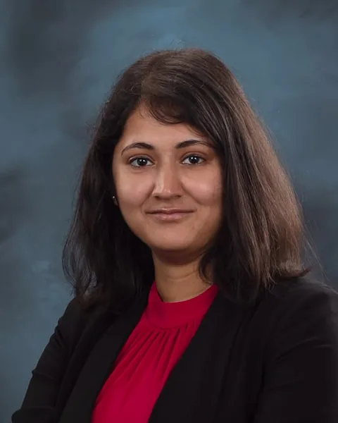
Chief Technology Officer

General Manager (Corporate Planning) and Head of R&D, Coal India Limited
CIL Coordinator
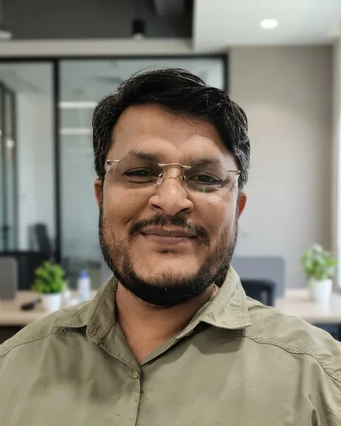
Manager (Environment), Coal India Limited
CIL Coordinator
IIT MadrasCoal India Limited
No one in this group matches.
Faculty who lead and co-lead the Centre's projects, tagged by research area.
Faculty who lead each of the Centre's projects.

Principal Investigator

Principal Investigator

Principal Investigator

Principal Investigator
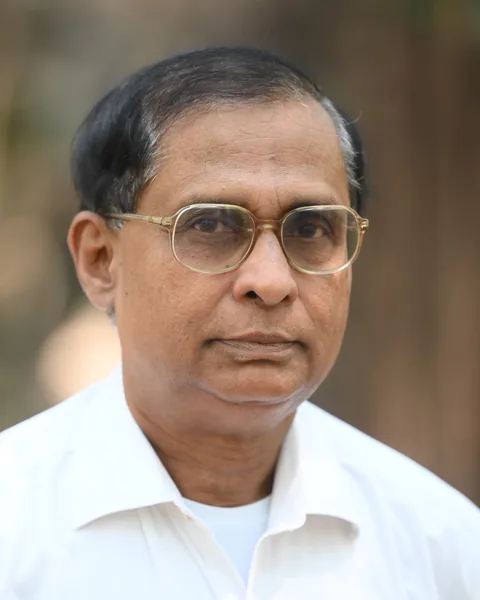
Principal Investigator
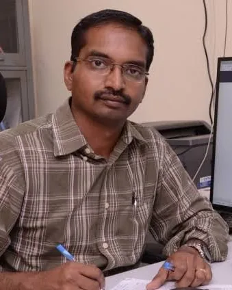
Principal Investigator

Principal Investigator

Principal Investigator
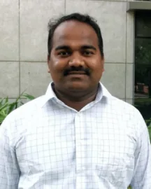
Principal Investigator

Principal Investigator
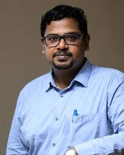
Principal Investigator
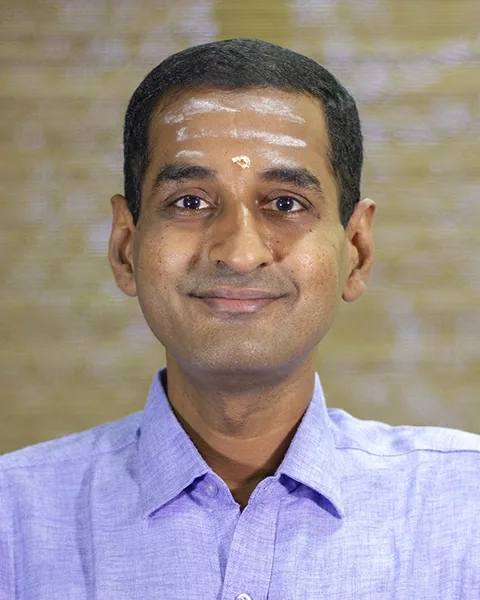
Principal Investigator

Principal Investigator

Principal Investigator

Principal Investigator
Faculty on the project teams, who co-lead with the Principal Investigators.

Professor of Practice
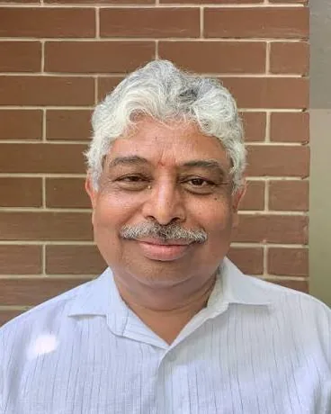
Professor of Practice, IIT Madras
Co-Principal Investigator

Co-Principal Investigator

Associate Professor, IIT Madras

Professor, IIT Madras
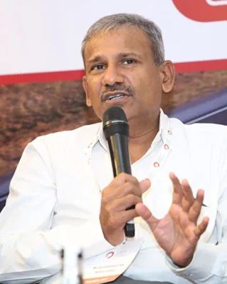
Co-Principal Investigator

Professor, IIT Madras

Faculty Investigator
No one in this group matches.
Scientists, scholars, engineers and project staff working on the Centre's projects.
Scientists who carry the research forward day to day.
Early-career researchers after their doctorate.
Researchers supporting experiments, analysis and field work.
Students whose degree research is part of a Centre project.
Staff who run project work, procurement and reporting.
Specialists who bring industry and operating experience.
No one in this group matches.
Engineers and managers from Coal India Limited and its subsidiaries who work with each project team.
Mr. Debabrata Ghosh
General Manager (Excv.)
Mr. Raghvendra Singh
Manager (CP)
Mr. Rajat Dwivedi
Manager (E&M)
Mr. Subhajit Halder
Manager (Mining)
Mr. Gaurav Kr. Singh
Senior Manager (System)
Mr. Shobit Mehta
General Manager (Excv.)
Mr. Vishal Pandita
Assistant Manager (Mining)
Dr. Chinmay Mondal
Assistant Manager (Mining)
Mr. Y Kamaleshwar Singha
Senior Manager (E&M)
Mr. Javaid Mohammad Akhoon
Senior Manager (E&T)
Mr. Pradeep Kumar
Deputy Manager (IE)
Mr. V. Vasu
General Manager (Excv.)
No one in this group matches.
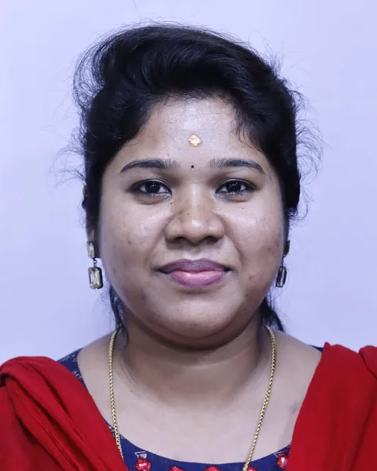
Manager (Finance and Administration)
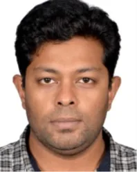
Project Manager (Operations)
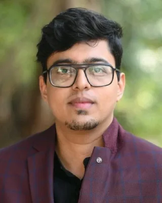
PR and Communications Manager
No one in this group matches.